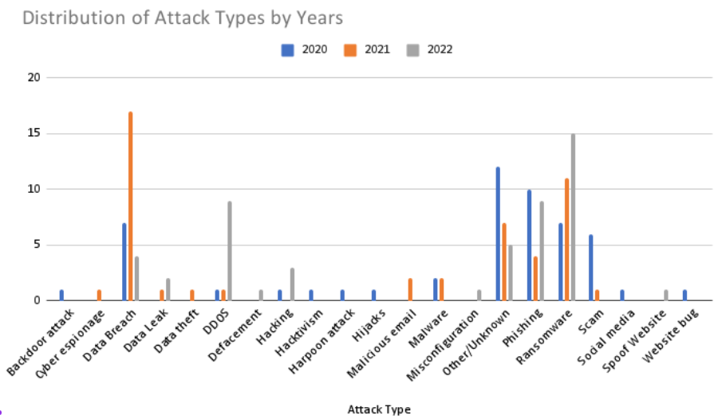

Cyber attack surfaces and Vulnerabilities in Civil Aviation
Big data, cloud-based infrastructure, IoT devices, Blockchain, mobile networks, electronic flight bags, in-flight internet, satellite communication, and navigation systems, among others, have a significant impact on the industry's security landscape. As the data flow between internal and external systems expands, so does the attack surface, making cybersecurity a top priority. The primary systems that commonly targeted by cyber threats in the aviation industry are :
Aircraft IP networks of flights : Flights now heavily rely on interconnected systems, and the IP networks within aircraft are prime targets for cyber threats. These networks manage critical flight systems, communication, and passenger services.
Digital Air Traffic Controls (ATCs) and traffic management systems : ATCs and traffic management systems have transitioned to digital platforms, increasing their vulnerability to cyberattacks. A breach in these systems could have disastrous consequences for air traffic management.
Flight-By-Wire systems : Modern aircraft utilize flight-by-wire systems, which can be manipulated by cybercriminals to compromise flight controls and navigation.
In-flight interface devices : Passengers now expect in-flight connectivity, but these systems are also potential entry points for cyber threats.
Flight history servers : Data on past flights is essential for analysis and optimization, but if compromised, it can reveal sensitive information about an airline's operations and vulnerabilities.
Fleet and route planning systems : The digitalization of fleet and route planning systems has made them attractive targets for cyberattacks, potentially affecting flight schedules and routes.
Passenger reservation systems and frequent flyer or loyalty programs : Personal data, payment information, and loyalty program details are stored within these systems, making them lucrative targets for cybercriminals.

Figure 4 - Bar chart of various attack types on avation sector.
Ticket booking portals. : These portals are often accessible to the public and are susceptible to Distributed Denial of Service (DDoS) attacks and other forms of cyber threats.
Cargo handling and shipping : The aviation industry's logistical operations rely heavily on digital systems, including cargo tracking and shipping, making them vulnerable to cyber intrusions.
Access, Departures, and Passport Control Systems : Airport security is critical, and any compromise in access control or passport control systems can have serious security implications.
Cabin Crew devices : Devices used by cabin crew for communication and service on board are potential entry points for cyber threats.
Insider threats : Human factors remain a significant concern, as insider threats, whether intentional or accidental, can compromise aviation security.
Mitigation Tactics
While the aviation industry keeps adopting advanced systems to work better and make passengers happier, these innovations can also create opportunities for cyberattacks. To protect against this, the aviation sector should follow these security steps :
Implementing Robust Cyber security Protocols : It is crucial to implement robust cybersecurity protocols throughout all critical components within the aviation ecosystem.
Keeping Systems and Software Updated : Utilize current systems and software, and regularly assess them for potential vulnerabilities.
Regular Assessment of Aviation Applications : Perform regular evaluations to identify vulnerabilities in all aviation applications, including those used during flights and within the cockpit.
Endpoint Security : Secure access to network devices and systems by protecting endpoints with endpoint management solutions.
Multi-Factor Authentication (MFA) : Utilize MFA for identity and access management to enhance security.
Encryption Across Systems : Use encryption techniques to protect information in different systems. Ensure that all sensitive data, such as customer and employee details, including banking information and personal IDs, is securely encrypted. It is also important to encrypt communications between aircraft and air traffic control systems on the ground.
Cyber Resilience : Work towards attaining cyber resilience, which means being able to foresee and lessen risks, promptly and counteract threats, and recover from attacks with minimal damage.
Artificial Intelligence (AI) and Machine Learning (ML) : AI and ML offer sophisticated defenses against dynamic cybersecurity threats. For example, security systems empowered by AI can acquire the ability to detect anomalies and patterns, making it effortless to spot any potentially suspicious activities.
Threat Intelligence and Incident Response : Employ threat intelligence and incident response strategies to anticipate potential threats and take preemptive actions to identify, mitigate, and respond to them effectively.
Predictive Analytics : Utilize predictive analytics to anticipate the probability of different types of threat attacks and scenarios, allowing for the proactive mitigation of associated risks.
Zero Trust Architecture is a vital cybersecurity measure used to enhance security in the aviation industry. It involves not trusting any device or user by default, making it essential for safeguarding aircraft networks. This approach helps segment networks, preventing lateral movement between systems and ensuring the verification of all devices and users, even in complex aviation networks with IoT devices